Last Updated 10/3/2026
Projects I programmed. Here's my GitHub.
Hight Walker Lab LabVIEW Automation
In Summer '25 I had the privilege to help Dr. Angela Hight Walker and her lab with automating their Raman and PL spectroscopy experiments in LabVIEW. These were low-level programs to connect to instruments over various protocols and then send commands such as, "move the motor to 30 degrees," "change the cryostat target temperature to 5K", or "read voltage from 8 pins". Every instrument had a different manufacturer, but many experiments required multiple instruments to cooperate, so I synthesized control over multiple instruments. Key achievements for the summer included improving the spectra-vs-temperature experiment to wait until the temperature reached a proper degree of stability before collecting optical data, creating a routine to auto-focus the objective on the sample by moving the objective up and down with a piezoelectric nanopositioner iteratively until a local maximum in optical signal was reached, implementing new routines to measure resistance using a four-point calculation while sweeping temperature or field at a linear rate (for characterizing superconductor performance), and enabling optical-vs-temperature experiments to be conducted simultaneously with superconductor resistance measurements. A paper is in preparation detailing the instrumentation and software, but I won't release a repository with code because it belongs to Hight Walker Lab at NIST.
▮
15-213 Systems Class Projects
In Spring '26 I had the pleasure and pain of taking my favorite (so far) CS class as well as the hardest one I've had so far, Introduction to Computer Systems. For this class, we had to make a lot of projects involving some pretty hefty and low-level systems coding. To me, the most interesting, hardest, and most fun were: attacklab - stack smashing and ROP, where I even figured out a way to pass a pointer to a string of my own choosing as %rdi using ROP gadgets; cachelab - made a cache hit/miss simulator and also optimized 32x32 and 1024x1024 matrix transpose to maximize cache hits; malloclab - made a segregated explicit list malloc (dynamic memory allocator) that achieved 74% memory utilization, and somewhat less impressive, the speed on the grading servers was 8826 KOPS (top 87 in my class all had >10000 KOPS); tshlab - made a shell that can run foreground jobs, background jobs, have signal handlers to kill or pause jobs, and redirect program input/output to/from files; and proxylab - made a HTTP 1.0 web proxy that I could actually run and use through Firefox, reading data from sockets and building HTML GET requests. Unfortunately, I can't release a repository with code because that would be cheating for the class.
▯
15-362 Scotty3D Application
In Fall '26 I'm taking Computer Graphics at CMU. This class involves receiving a skeleton of a 3D graphics application, like a simplified version of Blender but with all core functionality missing. Over the semester students like me implement everything for the app in C++: from transforms in a scene graph all the way to a software rasterizer, mesh editing functions including Catmull-Clark subdivision and quadric error mesh simplification, a pathtracer, and a rigging and animation interface where users can control splines and kinematics. In addition, I'll be required to add two extensions with new features to Scotty3D. These are TBD! I won't release a repository with code because that would be cheating for the class.
18-095 Clank the Soda Rover
Phi and I built this robot that can identify, drive to, and pick up a soda can autonomously. We made it for the course "Getting Started in Electronics: An Experiential Approach." In this project Phi handled setting up the computer vision model which we flashed onto a GROVE AI chip using a YOLO model for soda cans, and wrote the code so that our ESP32 took the YOLO bounding box and would encode and send information about which direction the soda can's bounding box was in on a wire to an Arduino microprocessor. I handled this Arduino which did the steering and wheel controls. I also handled one more Arduino which used a distance sensor to detect when the soda can was present in front of the robot's forklift and would lift it off the ground. I built almost all the parts of the robot including 3D printing or laser cutting the body, wheels, rack and pinion for the forklift, and roof, and I wrote the Arduino/C++ code needed to calibrate the forklift (it moves up and down until a wire makes electrical contact signaling the forklift is in the right position) and control all the motors. This was the first robot we had ever built and we basically made it from scratch, except for the microprocessors. It was a bit of a mess, but it worked! Here's a repo for it and a video of it working.
Neural Network Playground
Back in 11th grade, I watched 3Blue1Brown's series on Neural Networks, and I got inspired to make my own webpage where you can construct your own neural network, visualize the weights and biases, and train it! This is very rudimentary, and I programmed everything myself. It's like a little neural network library that's very stripped down and very annoying to use. Here's the page.
Swim Lineup Optimizer
For my 11th grade IB Computer Science final project, I created an algorithm that is supposed to automate the challenge of taking a swim team and calculating the optimal events that each swimmer should swim in order to gain the maximum number of points. This problem is non-trivial since each swimmer can only swim a limited amount of relay and individual events, and it's not necessarily guaranteed that a faster swimmer will earn more points than a slower one since everything is ranking-based. In the end I used a heuristic that does a search based on intra-team ranking and specialty score, trying to place the fastest athletes and have them swim the events they were fastest at. Here's the repo.